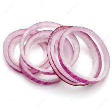
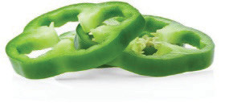
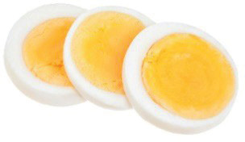
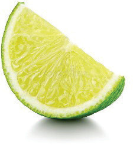
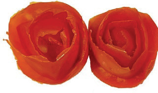

| Type of garnish | How to prepare the garnish | Garnish appearance |
|---|---|---|
| Onion | Wash, peel and cut it into the desired shape. |
 |
| Green pepper | Wash, dry and cut it into the desired shape. |
 |
| Eggs |
Boil, remove the shell and cut it into the desired shape. Yolk can be sieved in the dish. |
 |
| Lemon | Wash, dry and cut it into the desired shape. |
 |
| Carrots | Wash, dry and cut it into the desired shape. |
|
| Tomatoes | Wash, dry and cut it into the desired shape. |
 |
Dishes made from vegetables
Vegetables can be used to prepare various dishes such as brinjal curry, braised peas and carrots, fried cabbage and kachori.
Brinjal curry
Ingredients (serve 4 people)
3 medium-sized brinjals
1 green pepper
2 onions
1 teaspoon tomato puree
2 medium-sized potatoes
2 g curry powder
87